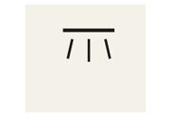
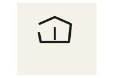
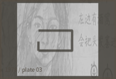

四组抄形，和四处现场
我还是不确定这些算不算字。下面只记“在哪里看见”，不写中文释义。后来我把同样的形画进了旧地图，缺口朝向也照抄；如果我当时没抄错，石门应该能按环境顺序还原。
 | 暴雨后石边的水痕旁。缺口朝下。 |
 | 旧路入口和脚印旁。总在“开始走”的位置。 |
 | 路线折回以后才出现；和原路返回不是一回事。 |
 | 屋门内侧、儿童练习墙和家庭物件附近。 |
另外三组
1978的抄本里还有三组形，我当年没放进门锁，只写在游戏的隐藏页：A2常在声音旁，A4常在身体图旁，B4在口部、饮食和发声记录里反复出现。它们组合时，顺序并不固定。
 +
+ +
+
我把这组三联形留在了石门后面，因为当时看不懂。现在回头看，可能应该先问“它们共同出现在哪些事情旁边”，而不是急着替每个形找一个中文词。